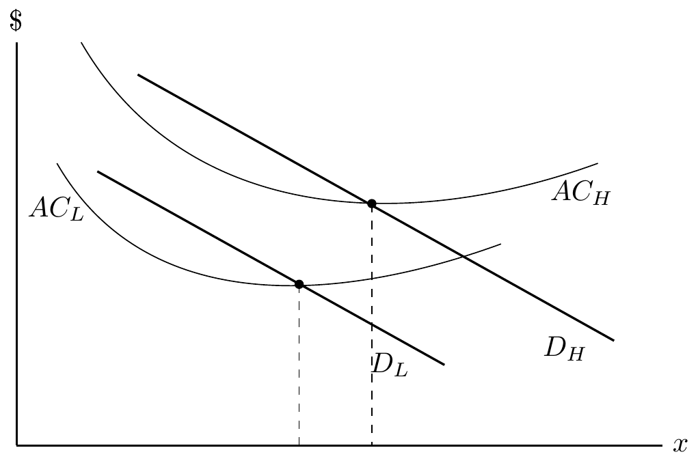
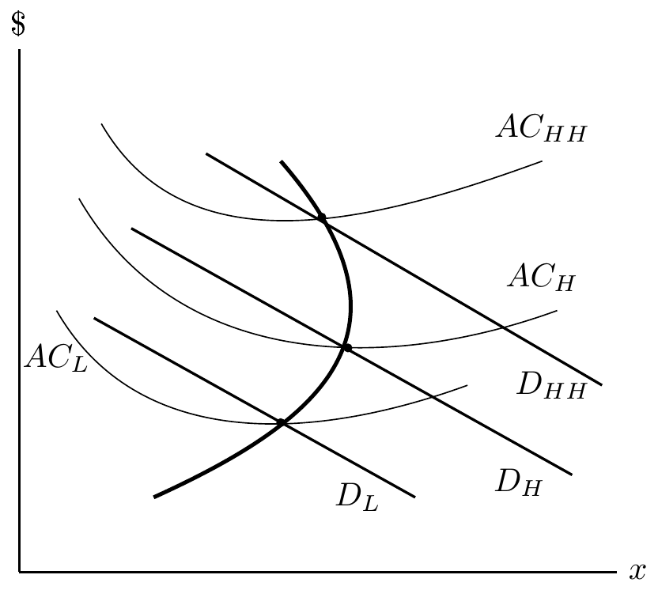

13 Ownership and Objective Functions
13.1 Hospital Ownership Types
There are three main types of hospitals in the US. Private not-for-profit hospitals account for the majority of hospitals in the US, about 60%. Private for-profit hospitals account for about 20% of hospitals in the US, and the remaining 20% are public not-for-profit hospitals, which are owned by state or local governments. But what does it mean to be a not-for-profit hospital? What does it mean to be a for-profit hospital? And how might these differences relate to hospital behaviors or underlying objective functions? The role of profit status and the underlying hospital objective function is the subject of this chapter.
Not-for-profit Hospitals
From a practical perspective, being a not-for-profit hospital means that the hospital is exempt from paying federal, state, and local taxes. In exchange for this tax exemption, not-for-profit hospitals are expected to provide a certain amount of community benefit. This community benefit can include uncompensated care, services to Medicaid patients, and certain specialized services that are generally unprofitable. The community benefit is not well defined, and there is no consensus on how to measure it. In 2011, not-for-profit hospitals received $24.6 billion in tax exemptions and provided $62.4 billion in community benefits. This is a large amount of money, and it is not surprising that there is some controversy surrounding the tax-exempt status of not-for-profit hospitals.
For some background on the controversy surrounding not-for-profit hospitals, see the following articles:
- Washington Post Article
- NYTimes Article
- Unfortunately still an issue 10+ years later:
Public not-for-profit hospitals rely more heavily on state and local government funding than private not-for-profit hospitals. Public not-for-profit hospitals are often the “safety net” hospitals of the area, and they tend to have a large share of uninsured or Medicaid patients. Because public not-for-profit hospitals tend to receive such a large share of Medicaid and uninsured patiehts, the tax breaks and other benefits conveyed to public not-for-profit hospitals tend to be less controversial.
For-profit Hospitals
For-profit hospitals are owned by private entities, investors, or corporations. The primary objective of for-profit hospitals is to generate financial returns for shareholders or individual owners. For-profit hospitals still provide medical services, and they are still subjected to a variety of regulations. However, for-profit hospitals more explicitly value profits as a key objective.
13.2 Objective Functions
Utility Maximizers
As economists, the real question is…what is the hospital’s objective function? Does not-for-profit status actually reflect a different objective than for-profit? Or is it just a tax status? There are a few different ways to think about this. In general, we can think of a hospital as maximizing some utility function, \(u(q,z)\), subject to a production constraint. Here, \(q\) denotes quantity of care and \(z\) denotes quality of care, and production is constrained by a break-even condition. This utility function could include profits, social welfare, or some other measure of hospital performance. The utility function could also include other factors, such as patient satisfaction, which is often used as a measure of quality.
A simplified utility maximization problem is reflected in Figure 13.1. Here, the hospital is maximizing utility subject to a break-even condition. The break-even condition is the point where the hospital’s revenue equals its costs. The hospital’s revenue is determined by the demand curve, and the hospital’s costs are determined by the average cost curve. The hospital’s utility function is represented by the indifference curves. The hospital will choose the quantity of care that maximizes utility, which is the point where the indifference curve is tangent to the demand curve.
We can imagine a hospital repeating this utility maximization problem over several different hypothetical combinations of quality and quantity of care. The result is a production possibilities curve (PPC), which is shown in Figure 13.2. The PPC shows the maximum quantity of care that the hospital can provide for each level of quality. The PPC is downward sloping because the hospital must sacrifice quantity in order to increase quality. The PPC is also convex because the hospital faces increasing marginal costs. The slope of the PPC is determined by the marginal rate of substitution between quality and quantity.

While it is generally difficult to form any precise predictions of hospital behavior under such a general setting, there are some predictions that we can make. For example, imaging a new state or federal policy that expands insurance access to many more individuals. In shifting demand for care outward, we can predict that this policy would cause the hospital to choose a point on the PPC that is further to the right, thereby increasing the quantity of care. Similarly, if the policy increased the cost of providing care, we can predict that the hospital would choose a point on the PPC that is further to the left, thereby decreasing the quantity of care. These are not groundbreaking predictions, but they are useful in thinking about how hospitals might respond to policy changes.
For profits (in disguise)
Hosptitals might instead care primarily about profits. This is presumably the case among for-profit hospitals, but might also be the case even for otherwise not-for-profit hospitals. For profits are easier to predict and study theoretically as their objective is simply to maximize profits, \(\pi=P(q)q - C(q),\) where \(q\) denotes quantity of care. We could also introduce quality of care into this problem, as part of the demand and cost functions.
Most empirical evidence doesn’t find much of a difference between for-profit and not-for-profit hospitals, suggesting that profits are at least part of the objective even for not-for-profit hospitals. One way in which for-profit and not-for-profit hospitals are empirically different, however, is with regard to prices. Here, for-profit hospitals have been shown to have much higher prices than not-for-profit hospitals on average.